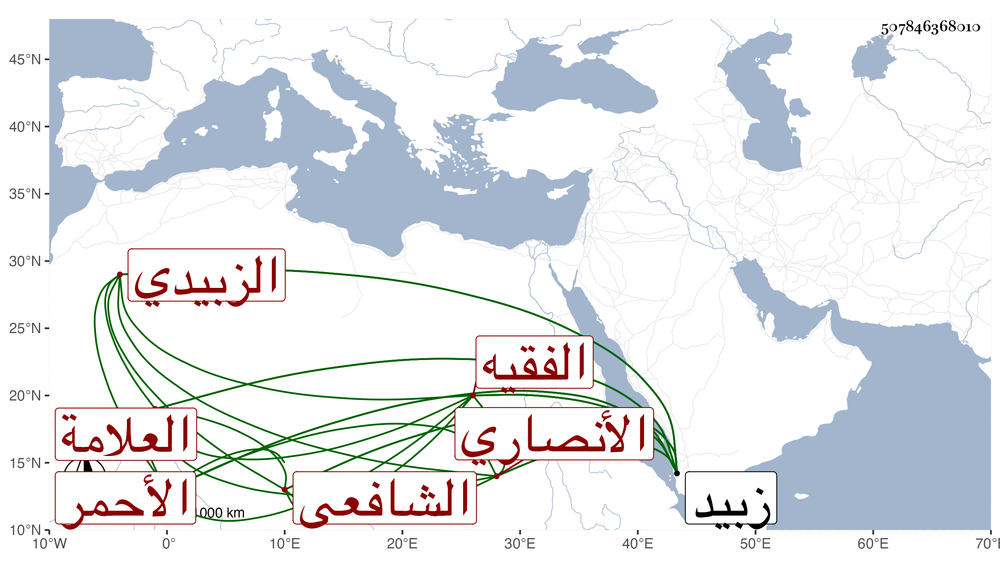

0902Sakhawi.DawLamic.ITO20230111-ara1.EIS1600.507846368010
Biography ID: 507846368010
469
عثمان بن علي العلامة الفقيه العفيف أبو عمر الأنصاري الزبيدي الشافعي الأحمر أحد أعيان فقهاء زبيد ممن اشتغل في ابتدائه على الموفق علي بن عبد الله الشاوري ثم انتقل للشهاب أحمد بن أبي بكر الناشري رفيقا لولده الطيب ولذا كان صديقا له حتى مات . ومهر في الفقه بحيث درس وأفتى واقتنى الكتب النفيسة وكان ذكيا فهامة حتى أنه عرض له طرش فكان يكتب له على السجادة ما يقصد إخفاؤه فيفهم المراد منه . ومات بعد سعال تمكن منه في ليلة الجمعة ثامن عشري جمادى الثانية سنة ثمان وثلاثين وبنو الأحمر جماعة فقهاء أخيار دخل جدهم وكان فقيها صالحا باستدعاء بعض ملوك الدولة الرسولية للتدريس ببعض مدارسهم واستمر عليه بنوه من بعده وقد ذكره العفيف الناشري في أثناء ترجمة بل أثبته في ترجمة مستقلة فقال أحد المفتين بزبيد والمدرسين بها ولي تدريس السابقية بزبيد والمحالبية بها وكان لا يدرس إلا بعد المطالعة وإذا انتهى لما طالعه قطع الدرس ولذا انتفع به جماعة وكنت ممن استفاد منه وحصل له صمم فكان لا يسمع شيئا مع سرعة الفهم وحضور الذهن بحيث لا تفوته الإشارة وهو رفيق الجمال الطيب في الطلب .
